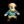

| - | Character | Speed | - | - | Score | - |
|---|---|---|---|---|---|---|
| Aria | 25:33.06 | 1384th | 4609 | 676th | ||
|  | Bard | 19:58.22 | 2513th | - | ||
| Bolt | 19:48.58 | 1129th | 1771 | 1275th | ||
| Cadence | 13:32.88 | 1292nd | - | |||
| Diamond | 23:41.21 | 1947th | 4622 | 1852nd | ||
| Dorian | 24:37.38 | 1172nd | 2369 | 1164th | ||
| Dove | 12:18.49 | 2339th | 448 | 1336th | ||
| Eli | 23:32.27 | 626th | 3990 | 607th | ||
| Mary | 26:33.04 | 967th | 1248 | 2533rd | ||
| Melody | - | - | 8498 | 254th | ||
| Monk | 29:50.94 | 1344th | 4904 | 1253rd | ||
| Nocturna | 14:11.92 | 1193rd | 9722 | 1615th | ||
| Tempo | 11:42.66 | 904th | 4511 | 916th | ||
| Coda | - | - | - | |||
| Story | 1:33:25.34 | 394th | 14188 | 556th | ||
| 9char | - | - | 7554 | 445th | ||
| 13char | 4:18:37.36 | 97th | 42226 | 40th |
| - | Character | HrdSp | NRSp | RndSp | PhsSp | MysSp | - | HrdSc | NRSc | RndSc | PhsSc | MysSc | DLess |
|---|---|---|---|---|---|---|---|---|---|---|---|---|---|
| Aria | - | - | - | - | - | - | - | - | - | - | - | ||
| Bard | - | - | - | - | 20:19.68214th | - | - | - | - | 2400935th | - | ||
| Bolt | - | - | - | - | - | - | - | - | - | - | 0-1-1170th | ||
| Cadence | - | 31:18.85811th | - | - | - | - | 4535428th | - | - | - | 9-1-3372nd | ||
| Diamond | - | - | - | - | - | - | - | 54777th | - | - | - | ||
| Dorian | - | - | - | - | - | - | 66th | - | - | - | - | ||
| Dove | - | - | - | - | - | - | - | - | - | - | - | ||
| Eli | - | - | - | - | - | - | - | - | - | - | - | ||
| Mary | - | - | - | - | - | - | - | - | - | - | - | ||
| Melody | - | - | - | - | - | - | - | - | - | - | - | ||
| Monk | - | - | - | - | - | - | - | - | - | - | - | ||
| Nocturna | 31:23.951173rd | - | 25:55.66222nd | 30:32.81323rd | - | 27763718th | - | 43101412th | 2648684th | 623928th | - | ||
| Tempo | - | - | - | - | - | - | - | - | - | - | - | ||
| Coda | - | - | - | - | - | - | - | - | - | - | - |
Last Updated:2021/05/14 22:31